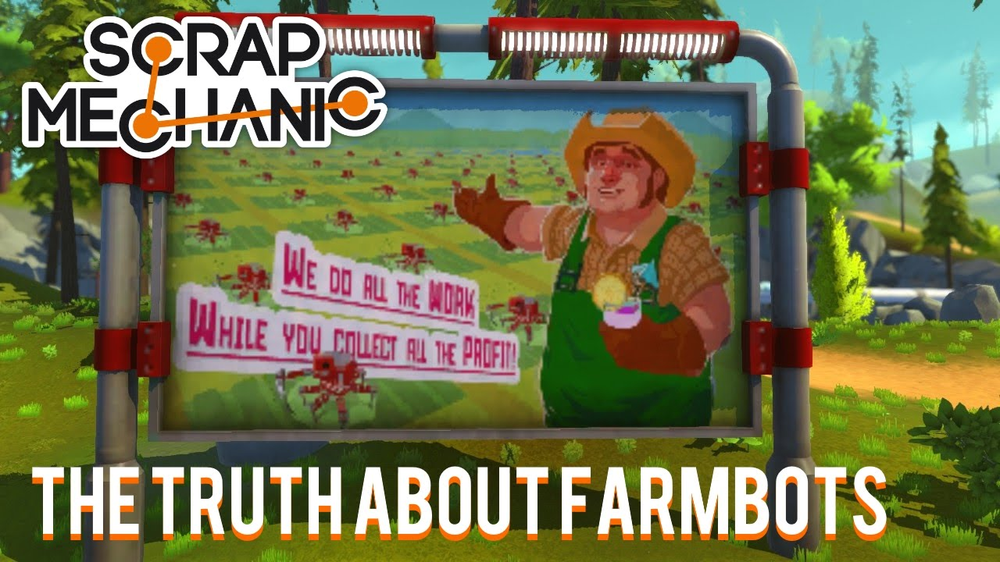

Scrap Mechanic is an all-new creative multiplayer sandbox game available on the steam store for $20 which drops you right into a world where you quite literally engineer your own adventures! Choose from the 100+ building parts you have at your disposal and create anything from crazy transforming vehicles to a house that moves. You’re even able to team up with your friends to create amazing things together: in Scrap Mechanic, you’re the master creator of anything you can imagine!

Here’s the deal: you’re a robot maintenance mechanic en route to your posting on a fully-automated agriculture planet. Your job is to take care of the worker robots as they work the land, sending the food they produce to the metropolitan planets. Thing is, close to touchdown your spacecraft loses control and crashes, but since you’ve got luck on your side (erm…), you survive! You’re stranded though, and at first glance you find that not everything’s quite as it should be. The Farmbots working the fields have gone crazy, and now there’s only one way to stay alive: using your quick thinking, your creativity and your wily knack of turning your surroundings to your advantage.

Let’s pop the hood and see what’s on offer right now:
Creative Mode!
An unlimited amount of parts are yours to play with! Build free on your choice of terrain without limitations or the threat of death.
Gender!
Choose between playing as a male or female mechanic.
Parts ‘n’ Blocks!
Scrap Mechanic comes loaded with over 100 parts. Some with unique shapes and sizes, but all giving you the power to basically create anything you want.
Interactive Parts!
The interactive parts that let you put your creations in motion represent the very best and most exciting parts of Scrap Mechanic! With a wide range of parts and an array of functions from gas and electric engines to thrusters, sensors and buttons, you’ll never be bored with the tools at your disposal!
Handbook!
Your Mechanics’ Handbook is your trusty educational friend, with you from the start and dying to be read! Flip trough its pages at your leisure to learn the basics of building in a easy way.
Connect Tool!
The tool that brings everything together and makes it all happen. A must for any true mechanic!
Lift!
Lightens the load when building creations with physics in mind. Let it lift you – and your creations – higher!
Sledgehammer!
Whack loose parts and watch them fly. Smacking physics around with the hammer is great fun.
all over scrap mechanic is a great game with tons of ideas at your command as well as being able to download other peoples creations from the steam workshop
i give it a
------8/10------